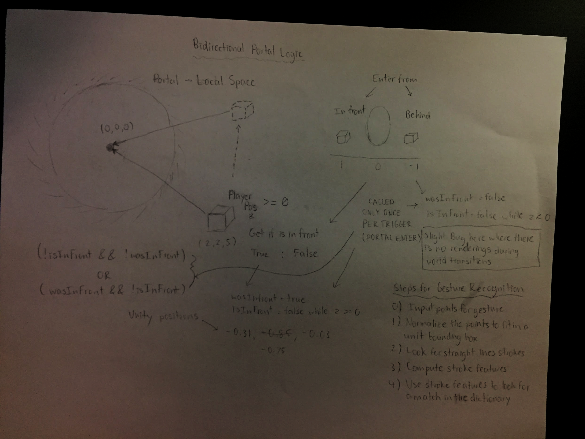
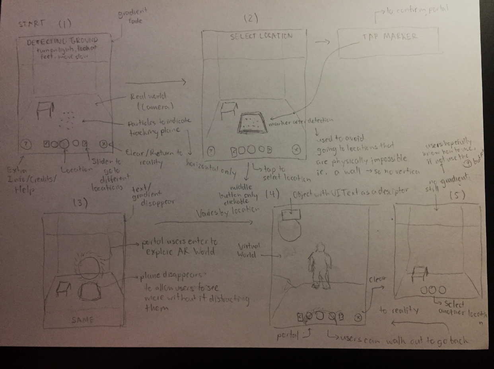
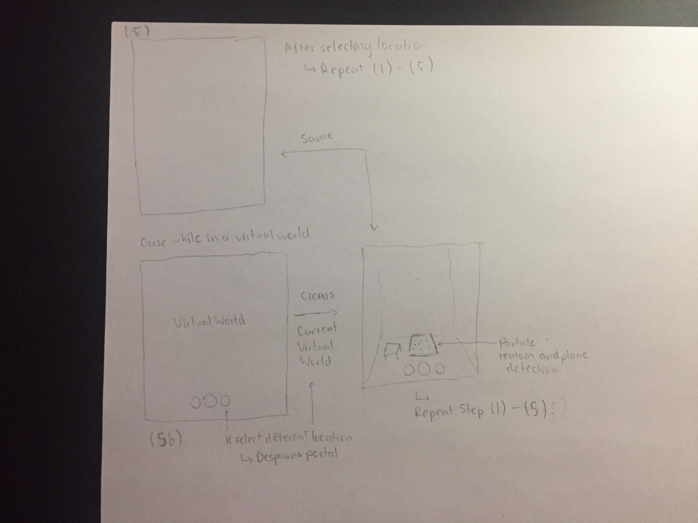

Doctor Strange AR Portal
Case Study
Learning Augmented Reality and incorporating AR in tech products.
Role
UX Designer, Developer
Introduction
For this AR Exercise, I wanted to challenge myself and learn ARKit. Because of my past experience using/implementing AR markers via Vuforia, I decided to develop the XR Portal and learn about markerless AR. For my app, I made a simple XR portal that portrays the Marvel franchise Doctor Strange where users create portal(s) to travel throughout the multiverse. Users simply choose a location they want to go to and tap on the screen to summon the portal in which they can enter the portal and explore the world inside.
Brainstorming
To understand the possibilities, I looked at all possibilities for solutions including both markerless AR and AR marker. For this process I wrote/sketch ideas that could be applied using AR and in turn applying those to mediums - Unity, Vuforia, ARKit/ARCore - to determine whether markerless AR or AR markers best suits the theme/design goals. Here are the list of ideas I came up with:
1. Book promotion: Game of Thrones (AR Packaging)
- Readers scan a specific page on the book which reveals more information about: characters, abilities, certain lores, locations in the world. For example, video/animation showing abilities and 3D models for character description.
- Gives better visualization of what the author intended for the worldmaking.
- Technology? Vuforia, Unity (something I have worked with before)
- Where? In between book chapters/transitions/prologue/epilogue
Drawbacks/Constraints/Comments:
- Book should be open for interpretation?
- Might be awkward to use when reading (can distract the user from reading)

2. Pokemon GO Extension (XR Portal)
- When near a gym (via Pokemon), players can create a portal and enter the gym.
- GPS based on closeness to the gym, like the current game, and portal making only available when near enough.
- Once inside the portal, users can engage in Pokemon battles with the current Gym Leader and other leaderboard players.
- Make some kind of interaction with other players in the AR? Multiplayer addition.
Drawbacks/Constraints/Comments:
- Potential time constraints developing the multiplayer.
- Ability to engage with Gym Leader and other leaderboard players already exist so only an AR component is added so new forms of game mechanics need to be added which can take time as Pokemons each have unique abilities.
- Utilizes GPS that needs to be set up in a fixed location. Not ideal for showing a live demo.
3. Doctor Strange Sling Ring Portals (XR Portal)
- Users make a circle with their hands to make a portal
- Phone in front of hand; tracking the hand OR do gesture recognition.
- Use some kind of button trigger to set off indicator to let the app know a circle is made. Once it is made, a portal appears.
- Locations can be preset or use Google Maps and allow users to teleport to specific locations. Add Thanos location ;)
- Users can create multiple portal(?)
- Interact with objects in the portal. Fight villains threatening Earth. Use different gesture recognitions to cast different spells.
Drawbacks/Constraints/Comments:
- Using a Google Map feature is ambitious and requires active Internet connection to feature locations around the map. It would somehow have to access Google Maps’ Virtual map to portray on the world.
- Preset locations can be limited and boring.
- Gesture recognition/hand tracking is not easy to implement and time consuming. Hand tracking would require some kind of AR marker(?)

4. Music AR Guide Manual (AR Instruction Manual / AR Packaging)
- Music training app to help beginners better understand/read better music notations, symbols, notes, rhythms, etc.
- AR Scan on music sheet. The scan identifies music notations and explains it to the user on a device as a UI.
Drawbacks/Constraints/Comments:
- Potentially limited to beginner only usage. More experienced users are less likely to need/use the app.
- Camera would have to constantly updated when parts of a sheet is finished and/or if rhythm changes (ie. Jazz)
- Potential problems: AR marker would have to be considerably accurate.
- What instrument to portray? Piano?

Next Steps:
Following the brainstorm process, I did research on each of the following ideas and looked at the potential solutions to solving them. I looked at online guides and tutorials to discover some of the things that are relevant to these ideas, and which guides are best suited to be extended into an appropriate app that meets the required design goals. Resources for these include:
Prototype Goals
(Obviously I decided to develop the Doctor Strange Portal =) )
Following the brainstorming process and research, the first steps included building a prototype for an XR Portal. Without prior knowledge of making AR Portals in ARKit, I used several of the resources mentioned above to help develop my own XR Portal. The process to building the app started small and included:
- Building a portal that can be entered through and explored.
- Have the app detect planes.
- Make a simple UI to do simple tasks (print statement)
- Create a simple 3D World to explore.
- Develop a simple gesture/touch detection.
A brief mockup of the app was made to identify the design goals and how the user experience would play out. Downloading different kinds of AR apps I compared several of interfaces each of these apps used to get a better understanding of AR design. I would then use this information and ultimately apply it to my own user experience design.

Apps I looked at:
- AR Runner
- Night Sky
- Ikea Place
- AR Fitness
- World Brush
Prototype Feedback
The completion of the first prototype helped me identify some of the design goals while developing my portal. It allowed me to better understand which features were capable of implementing and which features can be excluded. With constraints such as time to consider I had to adjust the way in which I want to implement my apps and as such these adjustments included:
- Excluding the use of gesture recognition. Implementing gesture recognition from scratch is difficult and very time consuming. Could use another person’s gesture recognition code, however, this is not easily acquired.
- Initial plane detection logic: if there is nothing to detect OR the detect is far away at a distance -> for vertical planes
- After implementing/testing this feature, plane detection is not as reliable from far away distances and require decent lighting to detect
- Changes: Detect only horizontal planes, and at the feet. This avoids players creating portal at only a wall and creates a portal only if there is space in front of them.
- Portal Flicker problem -> the logic for entering a portal will flicker -> postpone this problem until implementation of others functions are finished, comeback to this problem later -> implementation for transporting does work.
- Implement a UI that changes Text as an instructional help as opposed to having a pop-up that explains instructions -> Oversaturated with instructions
- Change basic UI buttons to implement different location spawns via the portal. Also add exit/clear button.
- Improved/Add features to 3D environment. Make one location a 3D World and another a 360 Video (as locations). Learn 360 Video implementation.
- Users cannot create multiple different portals. The AR Hit Test makes it awkward such that the portal have a tendency to spawn on top of each other (assuming I want to keep consistent when spawning initially)
A sketch of the portal logic and ways to detect gesture recognition.
With these changes/adjustments in mind, the DESIGN GOALS can be defined as:
- Successfully transport user’s current location to the AR World by stepping into the portal.
- Users can create a portal anywhere using plane detection.
- Show a virtual environment when the user enters the portal, the goal is to promote the model/product. In this scenario, it will be a CGI model and/or environment.
- Exiting the portal will return back to the real world.
- Create a competent UI that is easily navigable by users. UI should allow users to change the settings within the app into desired preferences.
- Plane detection should activate smoothly and function well.
- Users should experience the entire Virtual World. This includes looking up at the sky.
Summary
Initial prototype/mockup for the UI/UX design of the app. Reveals process and user experience tendencies.
- Users open the app
- Note: Hints/Popups are given throughout to instruct the user on how to use. Perhaps a button to explain.
- Detect the ground. A particles will appear to show a pseudo detector then a plane is created.
- Select location to choose from a list (slider) -> One 3D world, one 360 video
- Tap inside the marker created by the plane (to spawn portal)
- Explore the world. Clear the world if users want to reset.
Additional User Experience Design Details:
- Back button placed on the right (by convention the X key on a browser on the right)
- Help button to receive additional info such as developer name, share content, and instructions (not implemented)
- Buttons in general placed at the button, people want to see the world on top and don’t often look down -> interaction is done at the bottom
- Slider to select from a plethora of locations (not implemented)
- Indicators on top to guide users. Indicators to reveal plane detection.
- Users enter a unique, interesting environment inside the portal.


Programming Notes:
Make sure MeshTextPro is not null and referenced so you don't get Serializable error
Timeline
Brainstorm & Design Docs: 10 hrs
Research & Learning: 13 hrs
Debugging & Testing: 50 hrs
UI/UX Design & Worldmaking: 10 hrs
Challenges
- One of the challenges that came along while making the XR Portal was refreshing my skills in 3D computer graphics. Tutorials I watched used mostly shaders, and shaders are an integral part in 3D graphics. 3D computer graphics is not easy and I did not want to simply copy paste the tutorials but actually understand and learn how things worked. Some of the things I did to better understand the code was watching extra tutorial videos and looking at APIs of shaders in Unity. This helped me better understanding the uses of shaders and how they can be applied in AR.
- Another challenge that was prevalent throughout this process was incorporating all components of each tutorials and trying to combine them. Although individually each component worked on their own, combining them together often did not work as intended and this required time to solve. One of the ways in which I overcame this problem was by making small iterations of one component and gradually adding other components onto it. If somehow by adding one component creates an error to the entire project, I can always refer to past iterations (that worked) such that I can try and understand the problem and solve.
- My biggest challenge for this project was trying to resolve the flicker issue when a person would enter the portal. One of the problems that came about was that there does not exist any tutorials (in Unity) that successfully solves this problem when the user enters the portal. Although some tutorials explain their methods of solving this problem, one of the ways in which I tried to solve this problem was getting a better understanding of the logic/theory behind the flickering such that I can apply my problem skills. However having refreshed some of my knowledge in 3D computer graphics, and understanding that the problem comes as a result of the camera’s clipping plane, clipping out the view, I was unsuccessful in solving this problem. If I had had more time, another way in which I would approach this would be to look into potential solutions in ARKit (Swift) and transfer them to Unity.
Future Work
In terms of future work and things I would like to do in the future …
- Implementing features for gesture recognition. Rather than create the portal with a simple tap button/screen, the portal should feel earned and have a more positive user experience when mimicking the characters in the movie (Doctor Strange). In terms of execution, I would refer to an Android build as I have used and seen the source code for gesture recognition in the past and apply its build to Unity. This includes: (1) Detect input points for gesture; (2) Normalize the points to fit in a unit bounding box; (3) Look for straight line strokes; (4) Compute stroke features; (5) Use stroke features to look for a match from a dictionary of characters.
- In terms of art, I would have preferred if the user can somehow interact with the 3D models. In this case, I would need an animator to create animations as to make the 3D world less bland. Adding interaction where the user can click on the models and an event occurs. This can easily be implemented the same way as the portal through Triggers or Collision where colliding with it will cause an action to occur.
- Adding extra UI components: slider button with a scroll through the different locations, UI for help/extras/credits/settings. For the slider, I would implement this by having a list of locations and hide/reveal the current three on the slider -> I would have to use some kind of collection function algorithm. For the extras button I would simply just make a UI Panel with a button in Unity and have it translucent over the game screen to reveal extra information if the user needs (attached with a script to pop up and press next).
- Smoother control flow between transitions. No flickers, disable the plane detection when inside a world, crisp UI transitions. Most of these features can be easily implemented with time.
- Develop interesting worlds that are ideally fictional as the point of AR is to play around in a Virtual environment. For this I would need 3D Artists to help make models.
- Overall just adding more crisp UIs and exploring more with UX. Would need the help of graphic designers.
Technology
Software


Language